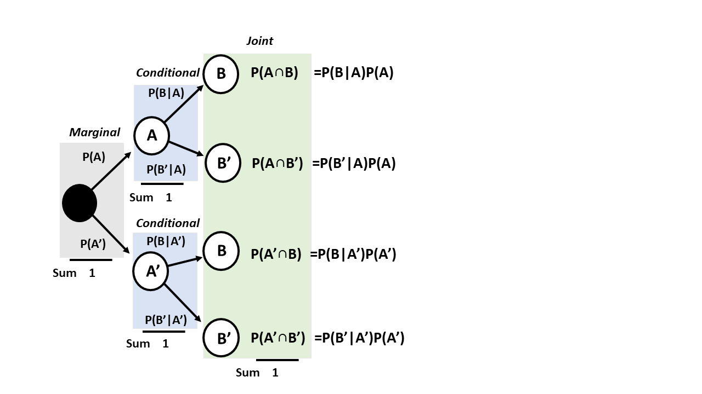

Chapter 4 Conditional probability
In this chapter, we will introduce conditional probability.
We will use conditional probability to define statistical independence.
We will discuss Bayes’ theorem and we will discuss one of its main applications, which is the predictive efficiency of a diagnostic tool.
4.1 Joint probability
Recall that the joint probability of two events \(A\) and \(B\) is defined as the probability of their intersection
\[P( A ,B )=P(A \cap B)\]
Now imagine random experiments that measure simultaneously two different outcomes. Simultaneous means that the order in which they are measured is not a condition of the experiment.
height and weight of an individual: \((h, w)\)
time and position of an electric charge: \((p, t)\)
the throw of two dice: (\(n_1\), \(n_2\))
cross two green traffic lights in green (not red): (\(R'_1\), \(R'_2\))
In this last case, while we may cross the traffic lights always in the same order, a run of the experiment may ask first whether the driver crossed traffic light 2 in green and then ask if the driver crossed traffic light 1 in green. Clearly this is the same as asking the other way round: (\(R'_ 2\), \(R'_1\))=(\(R'_1\), \(R'_2\)). That is, the joint probability of two events is commutative.
We are often interested in whether the values of one result condition the values of the other.
4.2 Statistical independence
In many cases, we are interested in whether two outcomes often occur together. We want to be able to discern between two cases.
Independence between events. For example, rolling a 1 on one die does not make it more likely to roll another 1 on a second die.
Correlation between events. For example, if a man is tall, he is probably heavy.
We may not observe what is ‘’first’’: whether the man is first tall and then heavy, or first heavy and then tall. The correlation does not tell us which of the two options is the most likely or what is the causal relationship between them. We need more information, for instance, that being heavy and short is not uncommon. Being heavy is observed with different heights while being tall and light is rarely observed. Therefore, it is more likely that the man is heavy because he is tall, than the opposite. In other words, being tall conditions the weight. Let us remark that point, the correlation between to outcomes does not give the direction of causality, we need more.
Example (conductor)
We conducted an experiment to find out if observing structural flaws in a material affects its electrical conductivity. We repeated the experiment \(n\) times and measured both quantities.
The data would look like
| Conductor | Structure | Conductivity |
|---|---|---|
| \(c_1\) | flaws | low |
| \(c_2\) | no flaws | high |
| \(c_3\) | flaws | low |
| … | … | … |
| \(c_i\) | no flaws | low* |
| … | … | … |
| … | … | … |
| \(c_n\) | flaws | high* |
We can expect low conductivity to occur more often with flaws than without flaws if the flaws affect conductivity.
Let’s imagine that from the data we obtain the following contingency table of estimated joint probabilities
| with flaws (F) | no flaws (F’) | sum | |
|---|---|---|---|
| low (L) | \(0.005\) | \(0.045\) | \(0.05\) |
| high (L’) | \(0.095\) | \(0.855\) | \(0.95\) |
| sum | \(0.1\) | \(0.9\) | 1 |
where, for example, the joint probability of \(L\) and \(F\) is
- \(P(L,F )=0.005\)
and the marginal probabilities are
- \(P(L)=P(L, F) + P(L, F')=0.05\)
- \(P(F)=P(L, F) + P(L', F)= 0.1\).
4.3 The conditional probability
Low conductivity is independent of having structural flaws if the probability of having low conductivity (\(L\)) is the same whether it has flaws (\(F\)) or not (\(F'\) ) .
Let us first consider only the materials that have flaws.
Among those materials that have flaws (\(F\)), what is the estimated probability that they have low conductivity?
\(\hat{P}(L| F)= \frac{n_{L,F}}{n_{F}}=\frac{n_{L,F}/n}{n_{F}/n}= \frac{f_{L,F}}{f_{F}}\) \[= \frac{\hat{P}( L,F )}{\hat{P}(F)}\] Therefore, in the limit when \(N \rightarrow \infty\), we have
\[P(L| F)= \frac{P(L,F)}{P(F)}=\frac{P(L\cap F)}{P(F)}\] Definition:
The conditional probability of an event \(A\) given an event \(B\), denoted \(P(B| A)\) , is
\[P(A|B) = \frac{P(A\cap B)}{P(B)}\]
We can prove that conditional probability satisfies the axioms of probability. The conditional probability can be understood as a probability with a sample space given by \(B\): \(S_B\). In our example, looking only at the materials with structural flaws.
4.4 Conditional contingency table
If we divide the columns of the joint probability table by the marginal probabilities of the conditioning effects (\(F\) and \(F'\)), we can write a conditional contingency table
| F | F’ | |
|---|---|---|
| L | P( L | F) | P(L | F’) |
| L’ | P(L’ | F) | P(L’ | F’) |
| sum | 1 | 1 |
where the column probabilities sum to one. The first column shows the probabilities of low conductivity or not only of the materials that have flaws (first condition: \(F\)). The second column shows the probabilities only for the materials that have no flaws (second condition: \(F'\)).
Conditional probabilities are the probabilities of the event within each condition. We read them as:
- \(P(L| F)\): Probability of having low conductivity if it has flaws
- \(P(L'| F)\): Probability of not having low conductivity if it has flaws
- \(P(L|F ')\): Probability of having low conductivity if it has no flaws
- \(P(L'|F ')\): Probability of not having low conductivity if it has no flaws
4.5 Statistical independence
In our example, the conditional contingency table is
| F | F’ | |
|---|---|---|
| L | P( L | F)= 0.05 | P(L | F’)= 0.05 |
| L’ | P(L’ | F)= 0.95 | P(L’ | F’)= 0.95 |
| sum | 1 | 1 |
We note that the marginals from the joint probability table from before (Section 4.2) and the conditional probabilities in this table are equal
- \(P(L)=P(L| F)= P(L|F')\)
- \(P(L')=P(L'| F)= P(L'|F')\)
This means that the probability of observing a low conductivity is not dependent on having a structural flaw or not.
We conclude that for the physical situation represented by this experiment, low conductivity in the material is not affected by having a structural flaw.
Definition
Two events \(A\) and \(B\) are statistically independent if either of the equivalent cases occurs:
- \(P(A| B)= P(A)\); \(A\) is independent of \(B\)
- \(P(B| A)= P(B)\); \(B\) is independent of \(A\)
and by the definition of conditional probability
- \(P(A\cap B)=P(A|B)P(B)=P(A)P(B)\)
This third form is a statement about joint probabilities. It says that we can obtain joint probabilities by multiplying the marginal probabilities.
In our original joint probability table
| F | F’ | sum | |
|---|---|---|---|
| L | \(0.005\) | \(0.045\) | \(0.05\) |
| L’ | \(0.095\) | \(0.855\) | \(0.95\) |
| sum | \(0.1\) | \(0.9\) | 1 |
we can confirm that all the entries of the matrix are indeed the product of the marginal probabilities. For example: \(P( L \cap F)=P(F)P(L)\) and \(P(L' \cap F')=P(L')P(F')\). Therefore, in our experiment, low conductivity is independent of having a structural flaw because the joint probability is the product of the marginals.
Example (Coins)
We want to confirm that the results of tossing two coins are independent. We consider all outcomes to be equally likely:
| Putcome | Probability |
|---|---|
| \(( H,T )\) | 1/4 |
| \(( H,H )\) | 1/4 |
| \(( T,T )\) | 1/4 |
| \(( T, H )\) | 1/4 |
| sum | 1 |
where \(( H,T )\) is, for example, the event of heads on the first coin and tails on the second coin. The contingency table for the joint probabilities is:
| H | T | sum | |
|---|---|---|---|
| H | \(1/4\) | \(1/4\) | \(1/2\) |
| T | \(1/4\) | \(1/4\) | \(1/2\) |
| sum | \(1/2\) | \(1/2\) | 1 |
From this table, we see that the probability of getting a head and then a tail is the product of the marginals \(P( H, T)=P(H)P(T)=1/4\). Therefore, the events of heads in the first coin and tails in the second are independent.
If we build the conditional contingency table on the toss of the first coin, we will see that obtaining tails in the second coin is not conditioned by having obtained heads in the first coin: \(P(T| H)= P(T) =1 / 2\)
4.6 Statistical dependency
An important example of statistical dependency is found in the performance of diagnostic tools, where we want to determine the state of a system with possible outcomes
- satisfactory (yes)
- unsatisfactory (not)
using a test with results
- positive
- negative
For example, we test a battery to see how long it can last. We load a cable to find out if it resists carrying a certain load. We run a PCR to see if someone has an infecteion.
4.7 Diagnostic test
Let’s consider diagnosing an infection with a new test. The infection status has two possible outcomes:
- yes (the patient is infected)
- no (the patient is not infected)
The test has two possible outcomes:
- positive (the test detects the infection)
- negative (the test does not detect the infection)
The conditional contingency table is the data we collect in a controlled environment (laboratory)
| Infection: yes | Infection: no | |
|---|---|---|
| Test: positive | P(pos | yes) | P(pos | no) |
| Test: negative | P(neg | yes) | P(neg | no) |
| sum | 1 | 1 |
The conditional table tells us that we are running an experiment where we know that the patient either has the disease or not. These are the controlled conditions of the experiment. Think for instance that you test the diagnostic tool in the hospital where you know the patients are infected. You also test the tool in healthy individuals who you know they are not infected.
Let’s look at the table entries
\(P(pos| yes)\) is called the sensitivity of the tool or the true positive rate: The probability of testing positive if a patient has the disease.
\(P(neg| no)\) is called the specificity of the tool. or the true negative rate: The probability of testing negative if a patient does not have the disease.
\(P(pos| no)\) is called the false positive rate: the probability of testing positive if the patient does not have the disease.
\(P(neg| yes)\) is called the false negative rate: the probability of testing negative if the patient has the disease.
High correlation (statistical dependence) between test and infection means high values for probabilities 1 and 2 (successes) and low values for probabilities 3 and 4 (errors).
Example (COVID)
Now let’s consider a real situation. In the early days of the coronavirus pandemic, there was no measure of the effectiveness of PCRs in detecting the virus. One of the first published studies (https://www.nejm.org/doi/full/10.1056/NEJMp2015897) found that
- The PCR had a sensitivity of 70%, in infection condition.
- The PCR had a specificity of 94%, in non-infected condition.
Therefore, the conditional probability table for this study was
| Infection: yes | Infection: no | |
|---|---|---|
| Test: positive | P(pos | yes)=0.7 | P(pos | no)=0.06 |
| Test: negative | P(neg | yes)=0.3 | P(neg | no)=0.94 |
| sum | 1 | 1 |
Therefore, the errors in the diagnostic tests were:
- The false positive rate: \(P(pos| no)= 0.06\)
- The false negative rate: \(P(neg| yes)= 0.3\)
Can we say with this data that the test is useful to detect the infection?
4.8 Inverse probabilities
We are really interested in finding the probability of being infected if the test is positive: \[P(yes| pos)\]
In other words, you may want to collect the people with positive test and compute the fraction of those that are really infected. Note that this experiment is not in a controlled environment of the lab, it is rather a surveying campaign on the population.
Alternatively, we can:
- Recover the contingency table for joint probabilities, multiplying by the marginal \(P(yes)\) and \(P(no)\) that we need to know
| Infection: yes | Infection: No | sum | |
|---|---|---|---|
| Test: positive | P( pos | yes)P(yes) | P(pos | no)P(no) | P(pos) |
| Test: negative | P( neg | yes)P(yes) | P(neg | no) P(no) | P(neg) |
| sum | P(yes) | P(no) | 1 |
- Obtain the conditional probability table for rows.
| Infection: yes | Infection: No | sum | |
|---|---|---|---|
| Test: positive | P(yes|pos) | P(no|pos) | 1 |
| Test: negative | P(yes|neg) | P(no|neg) | 1 |
To compute these probabilities, we use the definition of conditional probabilities for rows instead of columns. We divide the rows of the joint probability table in step 1 by the marginals of the test outcomes: \(P(pos)\) and \(P(neg)\).
For example for the first cell of the conditional probability table we obtain:
\[P(yes| pos)= \frac{P(pos|yes)P(yes)}{P(pos)}\]
\(P(pos|yes)\) was the result of the study (0.7). However, to apply this formula we still need to know the probability of infection \(P(yes)\) (prevalence) and of no infection \(P(pos)\). We also need the probability that a random subject in the poulations tests positive \(P(pos)\).
The prevalence \(P(yes)\) needs to be given. In real life it is obtained from another study. The first prevalence study in Spain showed that during confinement \(P(yes)=0.05\), \(P(no)=0.95\), before the summer of 2020.
To find the marginal of positive tests \(P(pos)\), we can use the definition of marginal and conditional probability:
\(P(pos)= P(pos \cap yes) + P(pos \cap no)\) \[= P(pos| yes)P (yes)+P(pos|no)P(no)\] This last relation of the marginals is called total probability rule.
4.9 Bayes’ Theorem
After substituting the total probability rule into \(P(yes| pos)\) , we have
\[P(yes| pos)= \frac{P(pos|yes)P(yes)}{P(pos|yes)P(yes)+P(pos|no)P(no)}\] This expression is known as Bayes’ theorem. It allows us to reverse the conditionals:
\[P(pos|yes) \rightarrow P(yes| pos)\] This result is important. It allows us to assess a diagnostic tool in a controlled condition (infection status is a lab) and then use it to infer the probability of the condition (infection) when the test is positive.
Example (COVID):
The test performance was:
Sensitivity: \(P(positive| yes)= 0.70\)
False positive rate: \(P(positive| no)= 1- P(neg|no)=0.06\)
The study in the Spanish population gave:
- \(P(yes)=0.05\)
- \(P(no)=1-P(yes)=0.95\).
Therefore, the probability of being infected in case of testing positive was:
\[P(yes| pos)= 0.38\]
We concluded that at that time PCR was not very good at confirming infections.
However, let us now apply Bayes’ theorem to the probability of not being infected if the test was negative.
\[P(no|neg) = \frac{P(neg|no) P(no )}{ P(neg|no) P(no)+P(neg|yes)P(yes)}\]
Substituting all values gives
\[P(no| neg)= 0.98\]
So the tests were good for ruling out infections and a fair requirement for travelling.
Example (Mosophonia)
In general, we can have more than two conditioning events, or controlled environments of our experiment. Think for instance on mispophonia categories. Therefore, Bayes’ theorem says:
\[P(E_i| B)= \frac{P(B|E_i)P(E_i)}{P(B|E_0)P(E_0) +...+ P(B|E_k)P(E_k)}\] when \(E_0, E_1, ..., E_k\) are \(k\) mutually exclusive and exhaustive events (misophonia 0, 1, 2, 3, 4) and \(B\) is an outcome of interest (depression). Then the inverse probability \(P(E_i| B)\) will give us the probability that patient has mosophinia grade \(i\) if he has depression. We do not know what was first, depression or misophonia, but this computation may be useful for finding potential causes of depression. But for this, we need to know, by running a campaign, the prevalence of the various degrees of misophania in the population \(P(E_0), P(E_1), ... P(E_k)\).
Remember that the denominator, or the prevalence of depression \(P(B)\), can be obtained from the total probability rule:
\[P(B)=P(B|E_0)P(E_0) +...+ P(B|E_k)P(E_k)\]
Conditional tree
The terms in the total probability rule can also be organized in a conditional tree.

The total probability rule tells us in how many ways I can get the result \(B\) from the outcomes \(A\) or \(A'\) (illustrated in red above).
\[P(B)=P(B|A)P(A)+P(B|A')P(A')\]
4.10 Questions
We collect the age and category of 100 athletes in a competition
| \(junior\) | \(senior\) | |
|---|---|---|
| \(1st\) | \(14\) | \(12\) |
| \(2nd\) | \(21\) | \(18\) |
| \(3rd\) | \(22\) | \(13\) |
1) What is the estimated probability that the athlete is in the third category if the athlete is a junior?
\(\qquad\)a: \(22\); \(\qquad\)b: \(22/100\); \(\qquad\)c: \(22/57\); \(\qquad\)d: \(22/35\);
2) What is the estimated probability that the athlete is a junior and is in the 1st category if the athlete is not in the 3rd category?
\(\qquad\)a: \(14/35\); \(\qquad\)b: \(14/65\); \(\qquad\)c: \(14/100\); \(\qquad\)d: \(14/26\)
3) A diagnostic test has a probability of \(8/9\) of detecting a disease if the patients are sick and a probability of \(3/9\) of detecting the disease if the patients are healthy. If the probability of being sick is \(1/9\). What is the probability that a patient is sick if a test detects the disease?
\(\qquad\)a: \(\frac{8/9}{8/9+3/9}*1/9\); \(\qquad\)b: \(\frac{3/9}{8/9+3/9}*1/9\); \(\qquad\)c: \(\frac{3/9*8/9}{8/9*1/9+3/9*8/9}\); \(\qquad\)d: \(\frac{8/9*1/9}{8/9*1/9+3/9*8/9}\);
4) As discussed in the notes, a PCR test for coronavirus had a sensitivity of 70% and a specificity of 94% and in Spain during confinement there was an incidence of 5%. With these data, what was the probability of testing positive in Spain (\(P(positive)\))
\(\qquad\)a: \(0.035\); \(\qquad\)b: \(0.092\); \(\qquad\)c: \(0.908\); \(\qquad\)d: \(0.95\)
5) With the same data as in question 4, testing positive in the PCR and being infected are not independent events because:
\(\qquad\) a: Sensitivity is 70%; \(\qquad\)b: Sensitivity and false positive rate are different; \(\qquad\)c: The false positive rate is 0.06%; \(\qquad\)d: the specificity is 96%
4.11 Exercises
4.11.0.1 Exercise 1
A machine is tested for its performance in producing high-quality turning rods. These are the test results
| Rounded: yes | Rounded: No | |
|---|---|---|
| smooth surface: yes | 200 | 1 |
| smooth surface: no | 4 | 2 |
What is the estimated probability that the machine will produce a rod that does not satisfy any quality control? (A: 2/207)
What is the estimated probability that the machine will produce a rod that fails at least one quality check? (A: 7/207)
What is the estimated probability that the machine will produce rods with a rounded and smooth surface? (A: 200/207)
What is the estimated probability that the bar is rounded if the bar is smooth? (A: 200/201)
What is the estimated probability that the rod is smooth if it is rounded? (A: 200/204)
What is the estimated probability that the rod is neither smooth nor rounded if it does not satisfy at least one quality check? (A: 2/7)
Are smoothness and roundness independent events? (No)
4.11.0.2 Exercise 2
We developed a test to detect the presence of bacteria in a lake. We found that if the lake contains the bacteria, the test is positive 70% of the time. If there are no bacteria, the test is negative 60% of the time. We implemented the test in a region where we know that 20% of the lakes have bacteria.
- What is the probability that a lake that tests positive is contaminated with bacteria? (A: 0.30)
4.11.0.3 Exercise 3
Two machines are tested for their performance in producing high-quality turning rods. These are the test results
Machine 1
| Rounded: yes | Rounded: No | |
|---|---|---|
| smooth surface: yes | 200 | 1 |
| smooth surface: no | 4 | 2 |
Machine 2
| Rounded: yes | Rounded: No | |
|---|---|---|
| smooth surface: yes | 145 | 4 |
| smooth surface: no | 8 | 6 |
- What is the probability that the bar is rounded? (A: 357/370)
- What is the probability that the rod was produced by machine 1? (A: 207/370)
- What is the probability that the rod is not smooth? (A: 20/370)
- What is the probability that the rod is smooth or rounded or produced by machine 1? (A: 364/370)
- What is the probability that the rod will be rounded if it is smoothed and from machine 1? (A: 200/201)
- What is the probability that the rod is not rounded if it is not smooth and it is from machine 2? (A: 6/14)
- What is the probability that the rod has come out of machine 1 if it is smooth and rounded? (A: 200/345)
- What is the probability that the rod came from machine 2 if it fails at least one of the quality controls? (A: 0.72)
4.11.0.4 Exercise 4
A quality test on a random brick is defined by the events:
- Pass the quality test: \(E\), fail the quality test: \(E'\)
- Defective: \(D\), non-defective: \(D'\)
If the diagnostic test has sensitivity \(P(E|D')= 0.99\) and specificity \(P(E'|D)=0.98\), and the probability of passing the test is \(P(E) =0.893\) then
What is the probability that a randomly chosen brick is defective \(P(D)\)? (A: 0.1)
What is the probability that a brick that has passed the test is actually defective? (A: 0.022)
The probability that a brick is not defective and that it fails the test (A: 0.009)
Are \(D\) and \(E'\) statistically independent? (No)
4.12 Practice
Load misophonia data from https://alejandro-isglobal.github.io/SDA/data/data_0.txt
Compute the conditional probability table of misophophonia (Misofonia.dic) given marital status (Estado). What is the estimated probability of having misophonia if the patient is married?
Compute the conditional probability table of marital status (Estado) given misophonia (Misofonia.dic). What is the estimated probability of being married if the patient is misophonic?